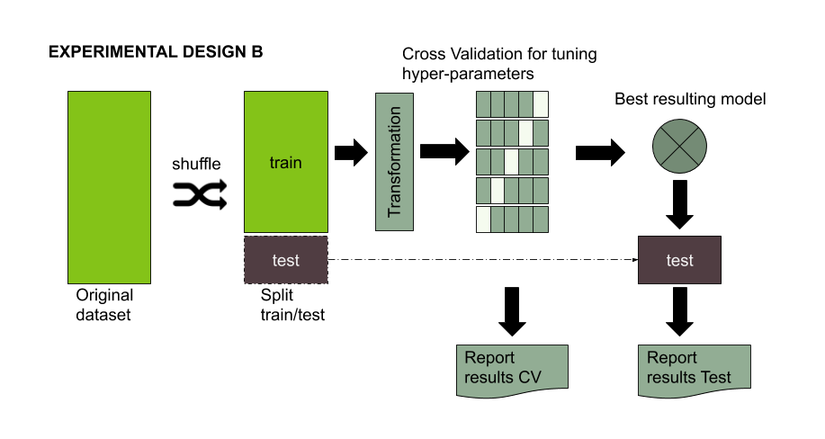

Machine Learning Experimental Design 102
The problem behind the split.
Shuffling your dataset and split in train/test not always is the best approach. Train and test datasets need some degree of similarity (both need to follow the same distribution), otherwise it would impossible for the model to achieve a decent performance on test. But, on the other hand, if the examples are too similar in both datasets, then you could not assure a real generelization of your model.
The caret package for R language implements two types of split: the first is to split using the distribution of your target variable (dependent variable). For classification problem, you can have a certain guarantee that all your classes will be present in your testset. However, all the examples present in testset could be very similar to train and their correct class prediction could be straightforward. Alternatively, the second is based on the information provided by [the descriptor variables]((https://topepo.github.io/caret/data-splitting.html#predictors). For creating sub–samples using a maximum dissimilarity caret implements the approach published in Willett,1999. This split strategy has the problem of not guarantee all the classes are present in your test set. As you can see, both approaches have their pro and cons and you probably will need to implement something in between.
An interesting and straightforward technique for analyzing the differences between your train and test set is to run a model for predicting whether a given example belongs to train or test sets. If the model shows high accuracy in classifying each example to the its dataset, then we can be sure they are quite different.
Another interesting approach used for classification is to do a regression analysis using the labels from training to predict the labels from test (and vice versa). Then you can use the coefficient of determination \(R^2\) to analyze the correlation between both datasets.
Be caution when using CV
CV provides you with an estimator of your model performance, however to be ….

Figure 1. Standard experimental design for evaluating the performance of a machine learning model using some kind of data transformation.
An obvious, but often ignored, dictum is that $Err_{cval} is more believable if the test set is further separated from the training set. “Further” has a clear meaning in studies with a time or location factor, but not necessarily in general. For J -fold cross-validation, separation is improved by removing contiguous blocks of \(N/J\) cases for each group, rather than by random selection, but the amount of separation is still limited, making \(Err_{ccv}\) less believable than a suitably constructed $Err_{cval}.
Links to resources:
- A simple approach to analyze the similarities between train a test set
- Ideally, train and test should be uncorrelated. Correlation between train and test labels. Using Regression analysis. The idea is to build a regressor using the labels from training as the independent variable and the labels from test as the dependent. The \(R^2\) can be used as a correlation factor. Alternatively you can try a simple correlation such as Pearson/Spearman
- Split using predictors using Caret package